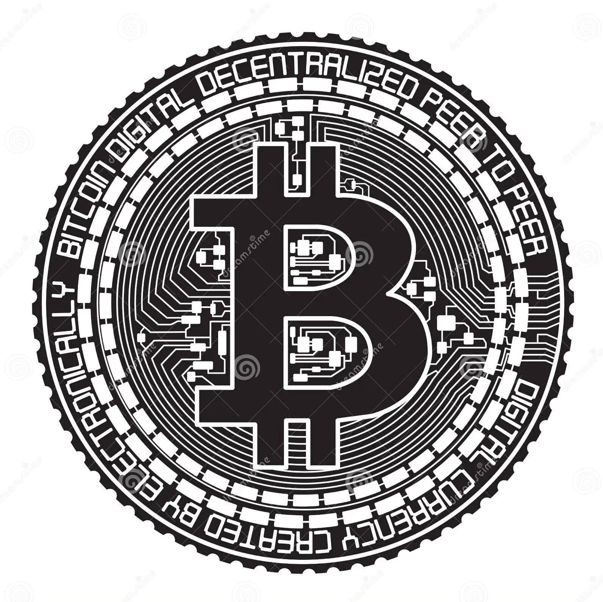

A MUDANÇA PELO BITCOIN
O bitcoin surgiu no ano de 2008, e mudanças já estão ocorrendo nas mais diversas áreas da sociedade. Uma das questões mais descultidas é sobre o fato dele não poder (caso bem armazenado) de ser localizado, o que impede as nações de taxar a riqueza de quem o tem. Segundo Nassim Taleb: "O Bitcoin é o começo de algo grande: uma moeda sem governo, algo necessário e imperativo."
O Governo de El Savador, por exemplo, via-se em uma cangora se tratando da economia do país, uma das ações do presidente eleito foi aderir a cripto como uma forma de ter uma maior dinâmica econômica em seu país.
Por outro lado, a Nigéria anunciou na última quarta-feira, 21, que pretende banir o acesso dos cidadãos do país aos sites das principais corretoras de criptomoedas do mercado, incluindo a Binance, a Coinbase e a Kraken. Segundo as autoridades do país, a alta demanda pelas criptos está causando a desvalorização da moeda local.

Outros países africanos como, África do Sul e Botsuana seguem o caminho da regulamentação do ativo.